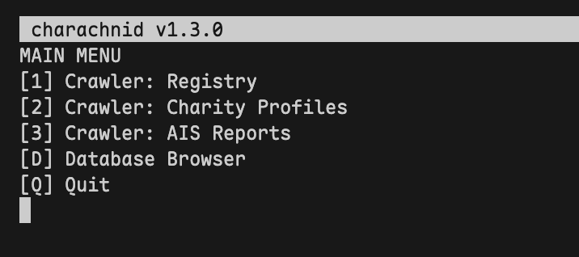

charachnid
Australian Charities and Not-for-profits Commission website crawler
Mozilla/5.0 (compatible; charachnid/x.y.z; +https://www.vulpineonline.com/charachnid)
charachnid is a web scraper for the Australian Charities and Not-for-profits Commission website.
its first runs were on approximately with user-agent:
Mozilla/5.0 (Windows NT 10.0; Win64; x64; rv:144.0) Gecko/20100101 Firefox/144.0
(it wasnt working with a custom user-agent at this point, so i just copied my browser's.)
charachnid was built for Wendy Brooks & Partners. if you have an inquiry regarding charachnid's behaviour or usage, please direct them there.
if you have an inquiry regarding charachnid's implementation or methods, you can contact harper fox.